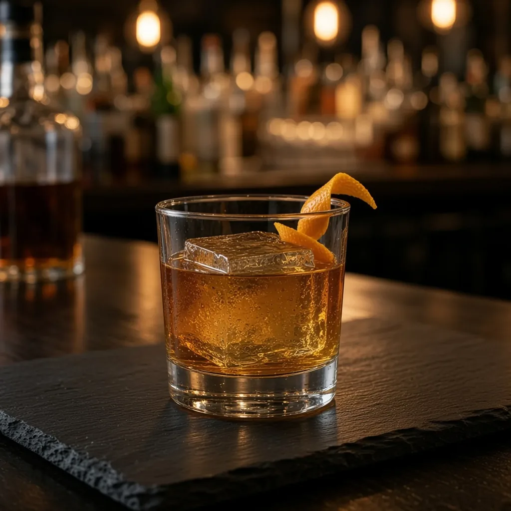
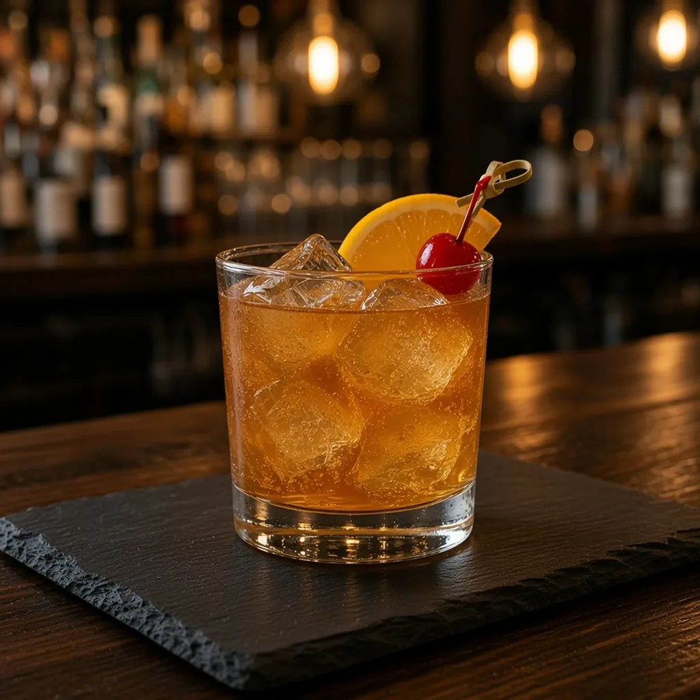
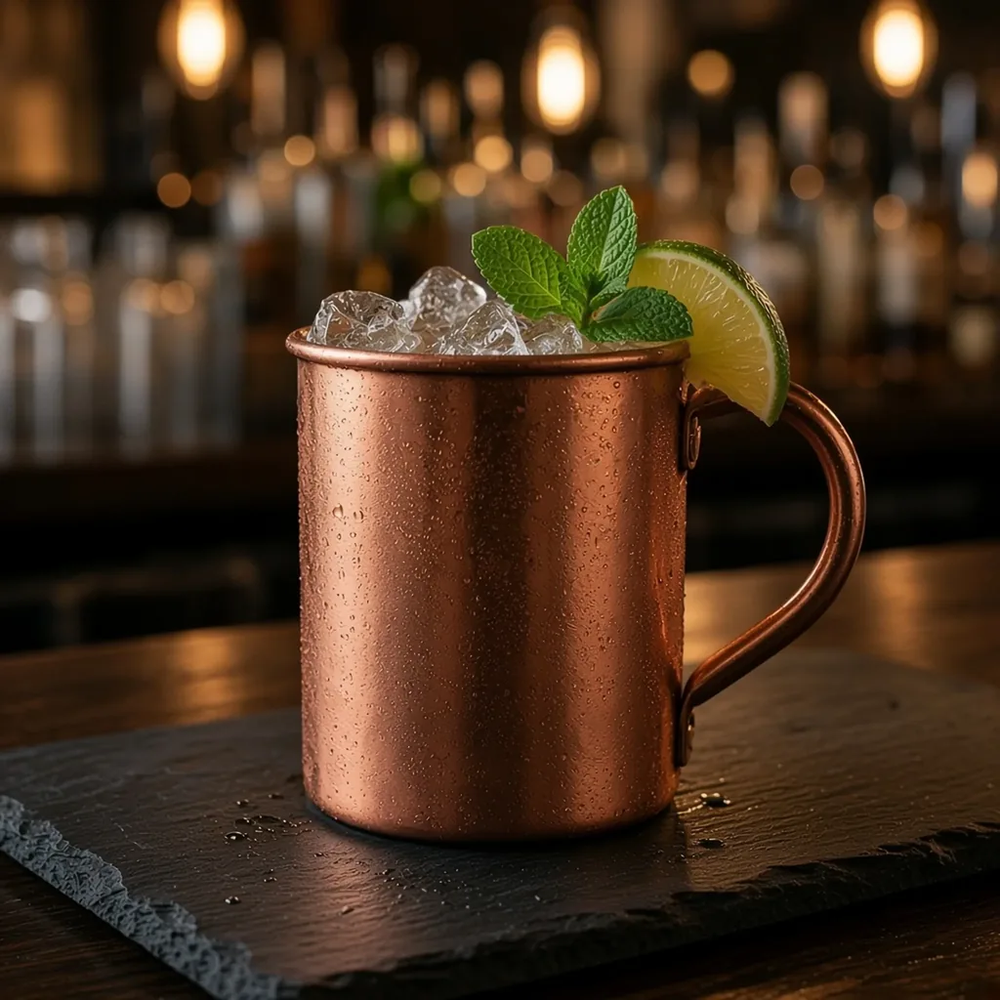
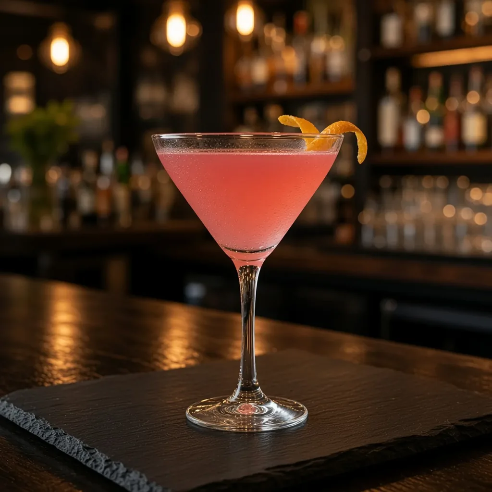
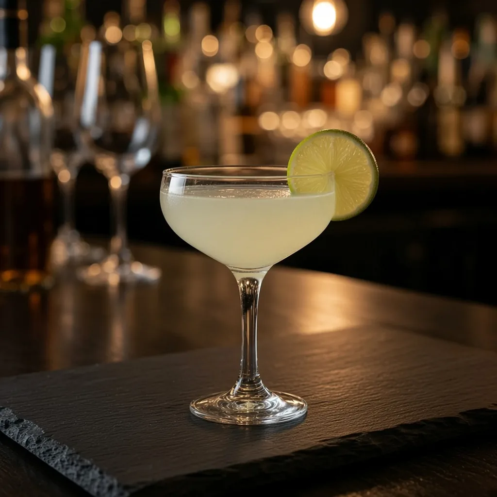

Old Fashioned
Whisky, sugar and bitters, stirred over one big ice cube.

Whisky, sugar and bitters, stirred over one big ice cube.

Stir 2 oz strong cold black tea with the syrup and bitters over ice. Most bitters contain a little alcohol, so skip them for a fully alcohol-free drink.
Pour it, then start a room. Drinking is optional in every game.

Whiskey SourBourbon balanced with lemon and sugar. A good first cocktail to learn.
Moscow MuleVodka, lime and spicy ginger beer, traditionally in a copper mug.
CosmopolitanCitrus vodka, orange liqueur, lime and just enough cranberry to turn it pink.
DaiquiriThe real one is three ingredients: rum, lime and sugar, shaken and served up.